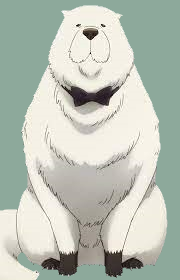

Relationships

Loid Forger(Owner)

Yor Forger(Owner)

Anya Forger(Owner)
Bond Forger
Bond Forgeris the pet of the Forger Family. Formerly known as Subject 8, Bond was used for experiments that resulted in him gaining precognition abilities.
Appearance
Bond’s large stature, long coat, and snout suggest he is a Great Pyrenees, being large enough for Anya Forger to comfortably ride on. He is a large dog of an indeterminate breed with fluffy white fur and black paws, noted by Anya to resemble the gloves and shoes of Bondman. His eyes are small and dark, with small ears that usually droop down. When his fur is wet, his body is revealed to be much thinner than his fur suggests.
|

|
|---|
|
Loid Forger(Owner) |
Yor Forger(Owner) |
Anya Forger(Owner) |
|---|